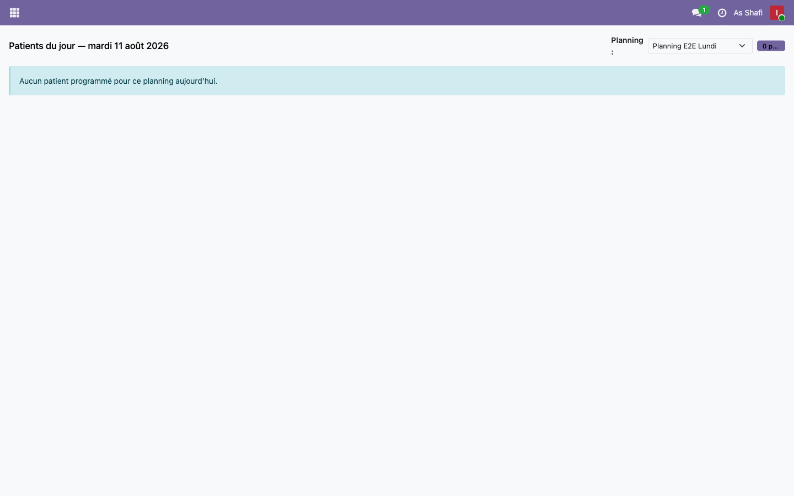
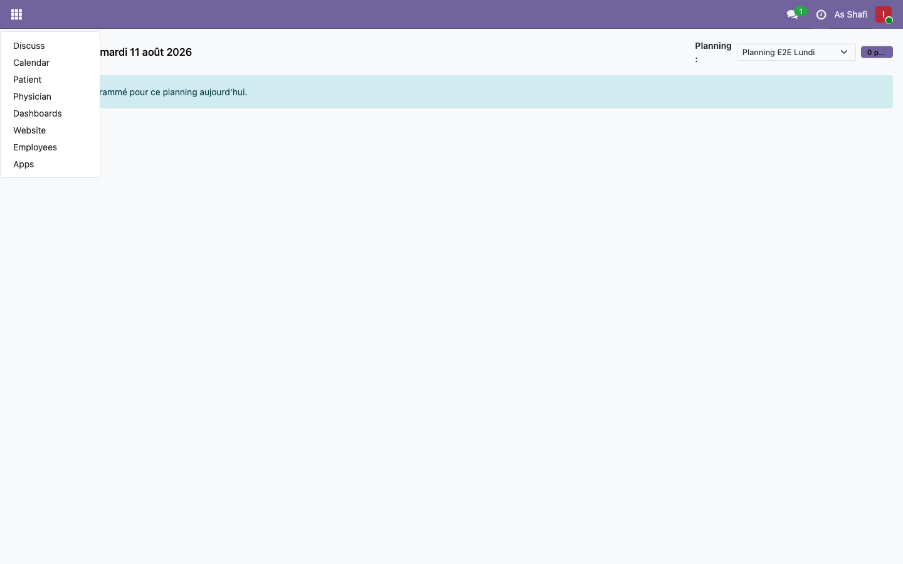
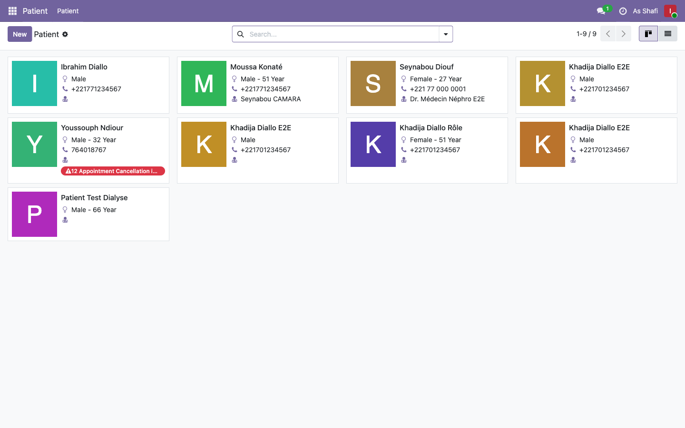
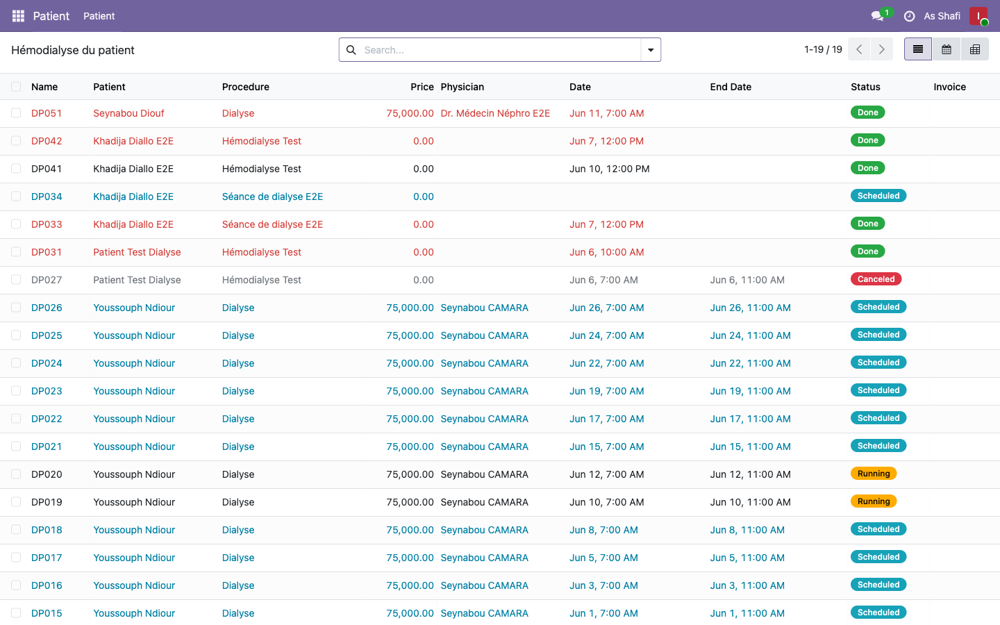
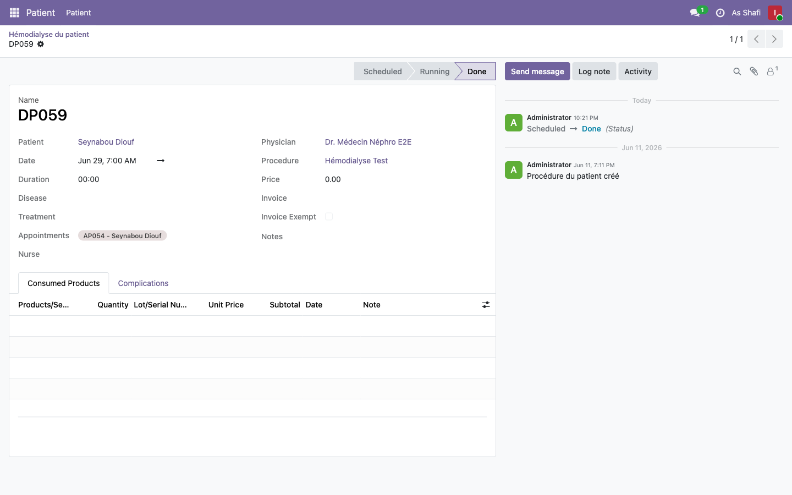

Sommaire
1
Accès et interface infirmière
L'interface infirmière est le tableau de bord dédié à la gestion des séances en cours. Elle est accessible directement après connexion.
- Connectez-vous sur http://localhost:8069/web/login avec vos identifiants infirmière
- Vous êtes redirigée automatiquement vers l'Interface Infirmier (action-588)
- Le tableau affiche uniquement les patients des plannings auxquels vous êtes assignée
- Chaque carte patient indique : nom, poste, statut de la séance, durée prévue

Accueil infirmière

Néphrologie infirmière

Liste patients
⚠ Important : Si vous ne voyez pas un patient, vérifiez que votre nom figure dans la liste des infirmières du planning correspondant (à configurer par l'administrateur).
2
Démarrer une séance

Liste hémodialyses

Formulaire séance — saisie des constantes initiales
- Sur le tableau de bord, repérez la carte du patient avec la séance à démarrer (statut Programmé)
- Cliquez sur le bouton Démarrer (ou icône play) sur la carte patient
- Le timer démarre automatiquement — la durée prévue s'affiche (ex: 4h00)
- Saisissez les constantes initiales : TA pré-dialyse, Poids pré-dialyse
- Confirmez le type d'accès vasculaire (FAV, Cathéter, etc.)
- Enregistrez pour démarrer officiellement la séance
ℹ Timer : Le chronomètre visible en haut de la carte compte la durée écoulée depuis le début de la séance. Il permet de surveiller le temps restant par rapport à la durée prescrite.
3
Suivi en cours de séance
Pendant la séance, vous pouvez enregistrer des mesures intermédiaires pour assurer le suivi clinique.
- Cliquez sur la carte patient en cours → formulaire de suivi s'ouvre
- Enregistrez les TA mi-séance (tension artérielle toutes les 30 min recommandées)
- Notez les éventuels ajustements de débit ou UF
- Consultez les alertes en temps réel : le dashboard médecin surveille les mêmes données
- En cas de problème clinique → passez à l'étape Signaler une complication
4
Signaler une complication

Champs cliniques de la séance
- Cliquez sur le bouton "Signaler une complication" sur la carte du patient concerné
- Dans le popup, sélectionnez le Type de complication :
🔴 Hypotension
😣 Crampes
🤢 Nausées
🌡️ Fièvre
😖 Prurit
⛔ Arrêt prématuré
📝 Autre
- Saisissez l'heure de survenue (remplie automatiquement)
- Entrez la TA au moment de la complication (ex: 80/50)
- Décrivez l'action prise (ex: "Administration NaCl 0.9%", "Réduction débit UF")
- Indiquez la résolution : Résolue / Partiellement résolue / Non résolue
- Validez — la complication est enregistrée et visible par le médecin
🚨 En cas de complication grave : Contactez immédiatement le médecin de garde. Le dashboard médecin affiche en temps réel les alertes — le compteur "Complications" se met à jour instantanément.
5
Terminer la séance
Formulaire séance — saisie des constantes post-dialyse
- Une fois la durée de dialyse atteinte, cliquez sur "Terminer la séance"
- Saisissez les constantes post-dialyse obligatoires :
- TA post-dialyse (ex: 120/70)
- Poids post-dialyse (pour calculer l'UF réelle)
- UF retirée (volume ultrafiltré en ml)
- KT/V (si calculé manuellement)
- Confirmez la fin — le statut passe à Terminé
- Le poste est libéré et apparaît disponible pour la prochaine séance
- Les données sont transmises au portail patient et visibles dans les bilans
ℹ KT/V : L'efficacité de la dialyse est automatiquement calculée à partir de l'urée pré et post saisie dans les bilans biologiques. Un KT/V ≥ 1.2 est considéré comme adéquat.
6
Notes importantes
📋 Planning et visibilité : L'infirmière ne voit que les séances des plannings auxquels elle est assignée. Pour être ajoutée à un planning, contacter l'administrateur (menu Configuration > Nephrology Schedule).
🔄 Synchronisation temps réel : Toutes les actions de l'infirmière (démarrage, complications, fin de séance) sont immédiatement reflétées sur le dashboard du médecin de garde.
📊 Traçabilité : Chaque complication enregistrée est stockée dans le module Complications (acs.dialysis.complication) et rattachée à la séance correspondante pour les rapports mensuels.